这两天，除了恐慌，大众能做的就是对武汉一顿骂。
“我们已知的武汉肺炎的重要消息，都不是武汉官方首发的”
武汉相关责任人的确可气，但如果你盯着他骂，只能说明你对我们公共事件的决策机制缺乏认识。
1、一线人员，尤其是医生没有尽力么，我觉得并不是的，可能心里更煎熬，一方面自己最有可能被传染（已经有15名医护人员被感染）。
另一方面自己虽然知道一些真相，但能做的其实很少。
2、为什么做不了，因为一线人员没有拍板的权力，也没有足够的资源去及早有效干预，他能做的就是催着领导一级一级向上汇报。
3、机制的顶端每天会面临太多的信息，有太多看上去非常紧急的事情要他们处理，他们无从、也没有足够的精力去判断哪个事情是最要紧的，所以，也不会很快下意见。
4、上面在观察下面的走势，下面没有接到授权，也不敢担责，只能采取很有限的措施。
5、自己控制不住事态的发展，上面也终于知道了事情的严重性，于是，媒体的闪光灯、中科院专家、领导的关注点开始转向武汉。
6、全民众志成城抗疫情，一边骂武汉不作为，一边为一线的医生点赞 。
7、事情解决，大多数人庆幸自己没有患病。
可患病去世的病人和医护人员、被延误的时机，谁又会真正在乎！
这台缓慢前行的庞大机器，他能否给一线责任人选择的自由？
没有明确批示，谁敢动嘴和动手？
就个人良心自由而言，他们没有及时公开真相，是应该被谴责的。
就岗位职责和资源能力而言，他们恐怕没有多少能力去解决这次事件。
这就是我们公共事件决策机制本身的弊端，也是悲剧屡次重演的重要原因。
希望大家能有更深的认识。
疫情面前，作为普罗百姓，其实更应该重视，因为我们的家庭和生活几乎没有抵御风险的能力。
所以，我们要更小心，千万不要“裸装”上街。
也希望这篇《切尔诺贝利》的影评能让大家思考更多。
正文共计8000字左右
预计阅读时间15min
转载请在后台回复“授权”

当科学家就应该天真
我们一心寻找真相
压根没想到
没几个人希望我们有所收获
但真相一直都在
无论我们是否看到
或是否想要看到
真相不在乎我们的需求和欲望
真相不在乎政府 意识形态 宗教信仰
它会一直安静守候
这就是切尔诺贝利最后的馈赠
我曾经害怕真相的代价
而我现在只会问
谎言的代价是什么
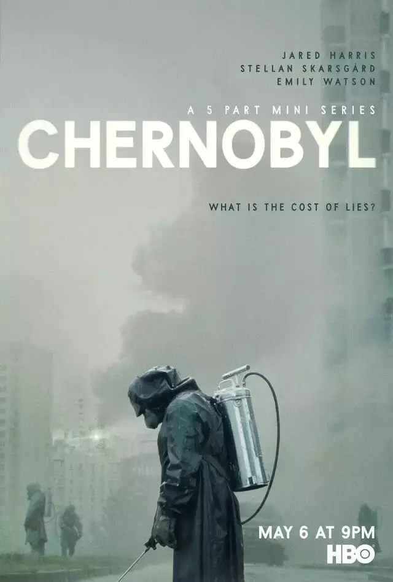
《切尔诺贝利》是一部很优秀的剧作。
第一次，核泄漏不再是一个宽泛的概念，而是有血有肉、触目惊心，充斥着谎言、痛苦、无奈和死亡的黑洞。
这场人类历史上最严重的核泄露事故值得全世界去反思和铭记。
-01- 一些数字
在开始介绍作品之前，我们先从几个数字了解这场可怕的灾难。
1986年4月26日凌晨1点23分：这是事故发生的时间，当时位于乌克兰的切尔诺贝利核电厂第四号反应堆发生了爆炸，8吨多强辐射物质泄漏，其辐射量相当于400颗美国投放在日本广岛的原子弹。
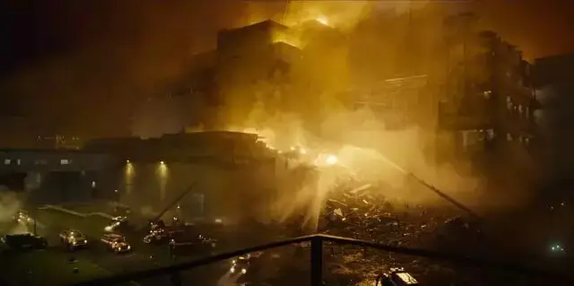
2000亿美元：这是这场灾难造成的损失，是近代历史中代价最“昂贵”的灾难事件，是汶川地震造成损失的两倍！
伤亡人数：事故前后3个月内有31人死亡，之后15年内有6-8万人死亡，13.4万人遭受各种程度的辐射疾病折磨。
苏联官方记录的死亡人数在1987年后便不再更新。
因事故而直接或间接死亡的人数难以估算，且事故后的长期影响到目前为止仍是个未知数。
死亡之桥：事故发生时，在桥上观望事故的人之后无一存活。
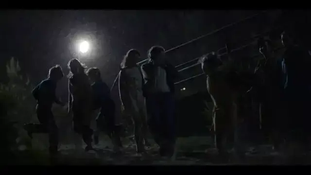
400名矿工：他们为了阻止堆芯彻底熔毁，顶着高温日以继夜工作了一个月，据统计其中至少100人于40岁前去世，如果没有他们的牺牲，堆芯一旦熔毁，地下水也会受到核污染，整个欧洲会被殃及。
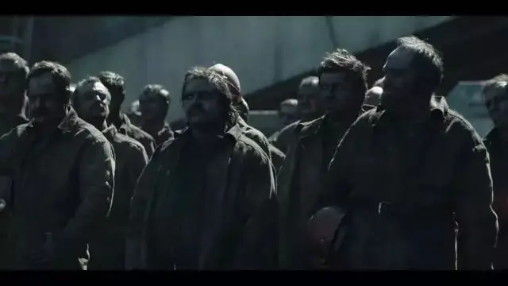
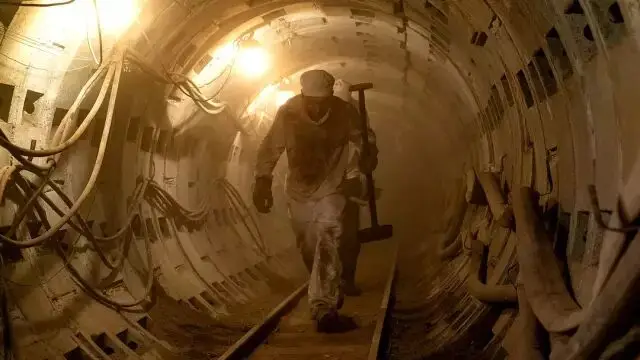
3名潜水员：他们冒死潜入高污染水中关闭了水闸，保证了起泡池蓄水箱顺利排水，避免了更大的爆炸。
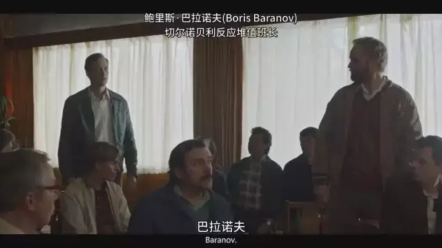
>60万人：他们被征进入隔离区工作，因辐射而发病或死亡的情况至今不明。
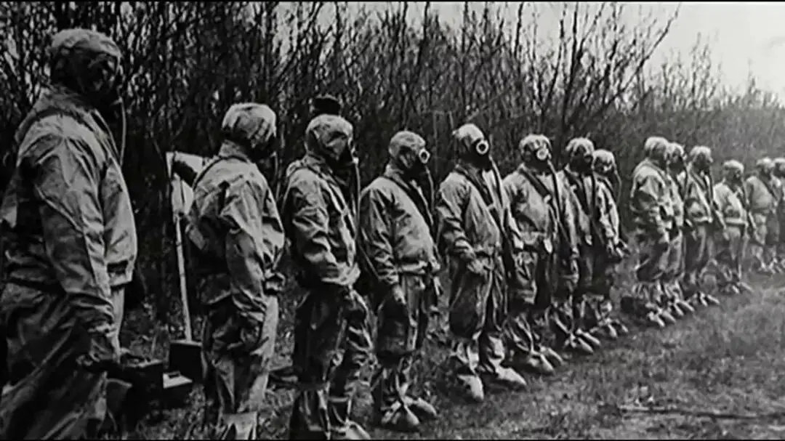
2600平方公里：作为核污染区被隔离，成为死城。
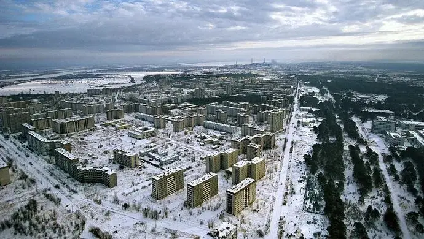
30万人：他们被迫离开家园，当时被告知是临时撤退，但至今无法返回。
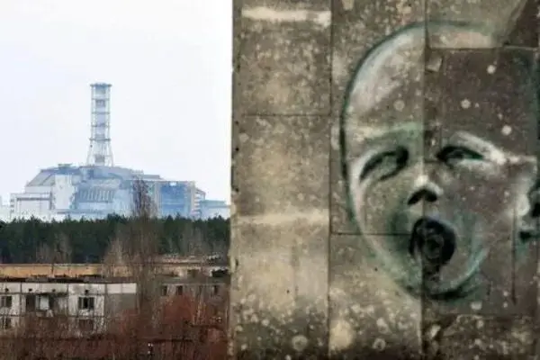
这些数字虽然触目惊心，但不见得会让人感同身受。
诺贝尔文学奖得主斯维特兰娜•阿列克谢耶维奇曾写道：
我时常觉得，简单和呆板的事实，不见得会比人们模糊的感受、传言和想象更接近真相。
为什么要强调这些事实呢，这只会掩盖我们的感受而已。
从事实当中衍生出的这些感受，以及这些感受的演变过程，才是令我着迷的。
我会试着找出这些感受，收集这些感受，并将其仔细保护起来。
作为一个与切尔诺贝利事故密切相关的白俄罗斯作家，她访问了上百位受到切尔诺贝利核灾影响的人民。
有无辜的居民、消防员、以及那些被征招去清理灾难现场的人员。
他们的故事以独白的方式呈现。
人们坦白地述说着痛苦，让人身历其境却又难以承受。
斯维特兰娜•阿列克谢耶维奇用这样的方式记录了关于切尔诺贝利另一种的真实。
本文便结合这部宝贵的作品《我不知道该说什么，关于死亡还是爱情》以及HBO新拍的美剧来述说那场可怕的灾难。
这样我们的视角会更加全面。
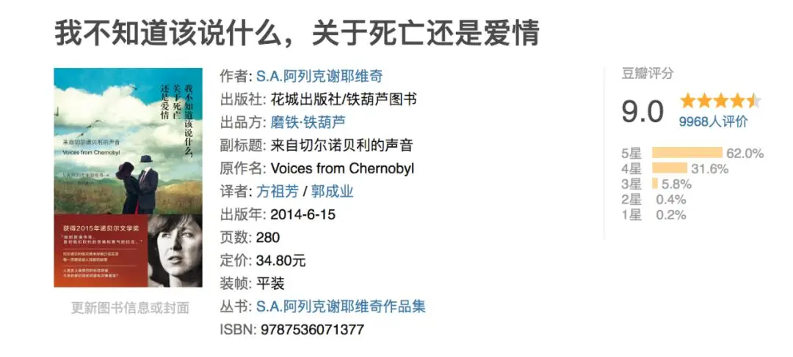
-02- 意识形态
先一句话介绍一下这部美剧的制作背景。
那就是美国人拍了一部发生在死对头苏联身上的“丑事”。
相信敏锐的你已经觉察到了一些东西。
一定不自觉地上升到了“意识形态”的高度。
因此，有人借着这部剧要把老大哥拉出来痛骂鞭尸。
又有些人大谈阴谋论要为老大哥洗白，认为这是一部美帝“别有用心”的政治剧。
但不论如何，历史的亲历者对这部剧最有评判的权力。
在IMDB中，这部剧获得了9.7的超高评价，而给予高评的正是那些亲历者。
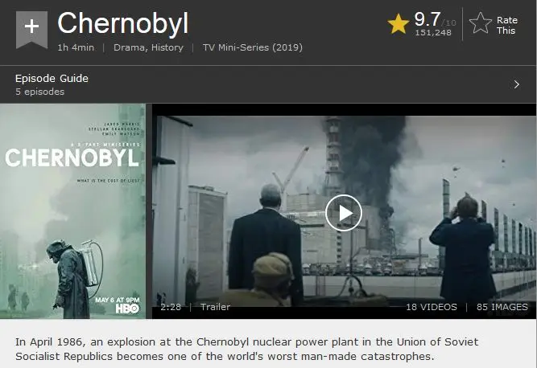
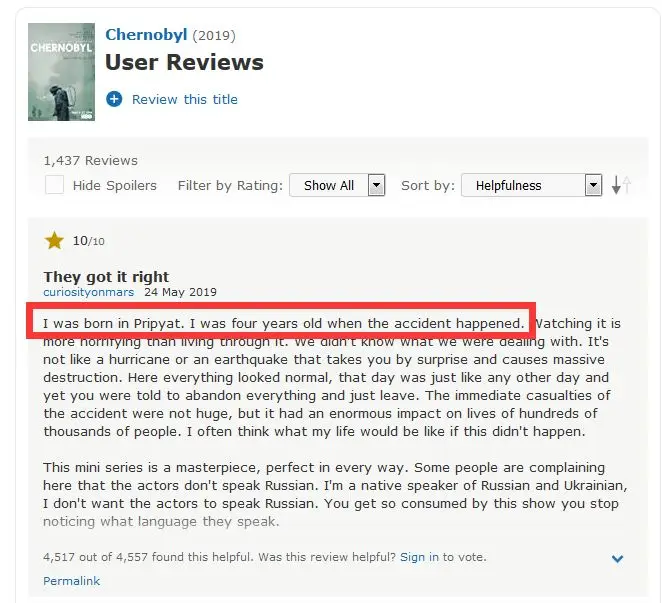
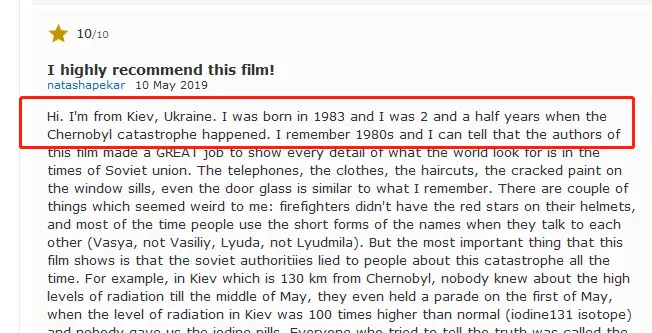
我们将其中一个评论翻译过来：
我出生在普里皮亚特，事故发生时我四岁。
看这个片子比真正经历它还要可怕。当时我们不知道我们在处理什么。它不像飓风或地震那样让你措手不及，造成巨大破坏。
一切看起来都很正常，那天和平常没什么两样，但你却被告知要放弃一切，离开这里。这不是一部纪录片，所以并不是每一个细节都准确，但我仍然认为它是真实的。因为创作者把重要的东西做对了。
我的父母都在切尔诺贝利核电站工作，我从小就听各种版本的故事。我认为这部剧是对切尔诺贝利灾难及其受害者故事的最好描述。
是为了提醒我们所有人谎言的代价。
可见，这部作品的水准相当高。
这主要得益于编剧克雷格 · 马津对于历史事实的尊重和审慎：
对这部剧来说，尽力保证准确，特别重要。
因为现在在讲的这个故事里，有巨大数量的人们经历过，而且成千上万的人今天还活着。
因为切尔诺贝利，他们失去了爱人，他们的寿命被缩短。所以努力保证准确，是对他们最大的尊重。
我自己看完后，再对照维基百科，几乎所有情节都是吻合的。
不仅是情节，就是台词、道具都是严格考究过的。
比如爆炸发生后，工程师阿基莫夫说「别担心，我们做的一切都是对的，只是一些奇怪的事情发生了」。
这些话是从真实的历史资料中还原过来的。
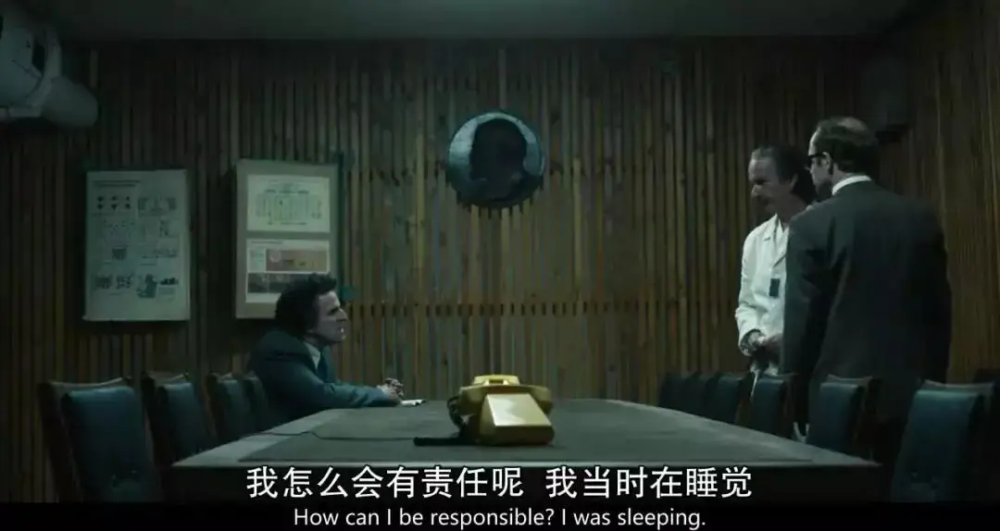
不过，这部电影不是纪录片，而是一部剧情片，是一个团队合作下的光影艺术。
而艺术一定是有态度和表现重点的。
关于切尔诺贝利，不同的人有不同的感受，有些人关注背后的真相与谎言，有些人则比较关注其中的生离死别。
而这部剧从第一集开始就直接表明了自己的重点和目的：
谎言的代价是什么？
并非是我们会把谎言误认为真相。
真正危险的是，我们听多了谎言，便不再能分辨出真相。
那时我们能做什么，除了放弃对真理的信仰，满足于谎言堆砌的故事，我们还剩下什么？
这就是这部剧存在的意义，去追问真相，并向每个人发问，谎言的代价是什么！
这也是编剧花这么大力气去探讨、表现这部作品的初衷：比如提到泰坦尼克号，大家都知道事故原因，是因为它撞上了冰山。但是提到切尔诺贝利，大家都不知道为什么，于是我开始阅读。
我认为这个出发点没有错，不仅没有错，而且是相当必要的。
这场灾难的发生绝不是简单的操作失误，甚至也不能全归咎于设计的缺陷，这场灾难关乎人性、体制以及良知。

所以，在尊重事实的基础上，每个人都有质疑、表达的自由！
我们没有必要因为别人发出的质疑就直接给对方冠上一个“阴谋论”的帽子。
那是无理取闹。
这是正文开始前必须要说的立场。
-03- 悲鸣
人是很奇妙的存在，有些东西是很难直面和承受的。
真相就是最大的一个。
当有人指出你做错了某一件事时，我们的第一个本能反应就是解释。
我们要让自己的行为合理化，要为自己找到借口。
"哦，当时我没看清""那样一定是对的"“我并不是很懒惰”.....
谁能接受自己的丑陋。
谁能接受自己的选择是一个错误。
谁能接受自己愚不可及。
接受了这些，那就意味着没有了坚持下去的希望。
因此，自欺是一种普遍的状态，并不分是苏联，还是美国。
这种人性中的弱点成为这场灾难的起点。
事故发生前的控制室中，正在进行一场安全测试。
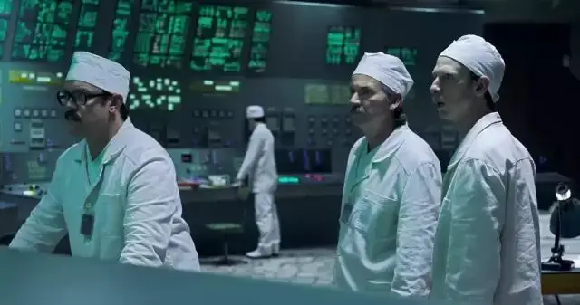
每一个操作人员都非常紧张，因为有些数值非常异常。
一个操作人员向副总工程师请求停止测试，可副总工程师对他破口大骂，执意要完成这次测试。
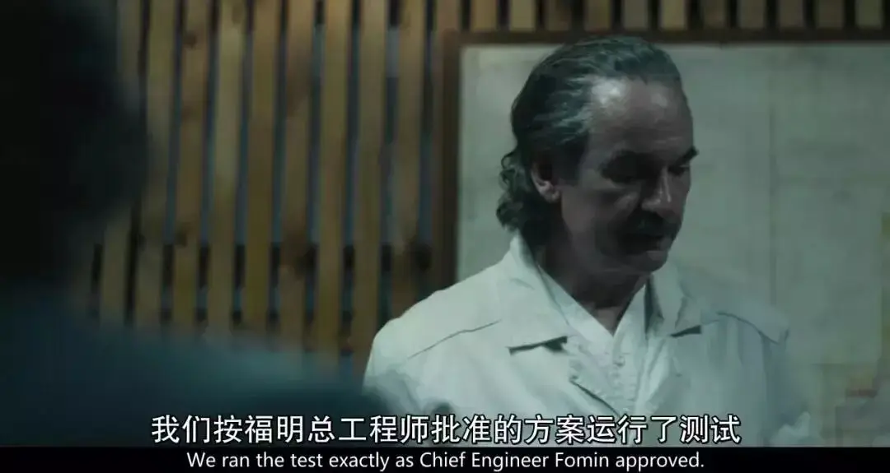
因为，这场测试关系他是否会被提拔。
即使他有着25年的核电站工作经验，可在利益的诱惑下，他选择了激进的操作。
他心底里坚信，自己下的指令一定没有问题。
当爆炸发生后，控制室内警报声不断。
一个技术员跑来大喊“堆芯爆炸了”。
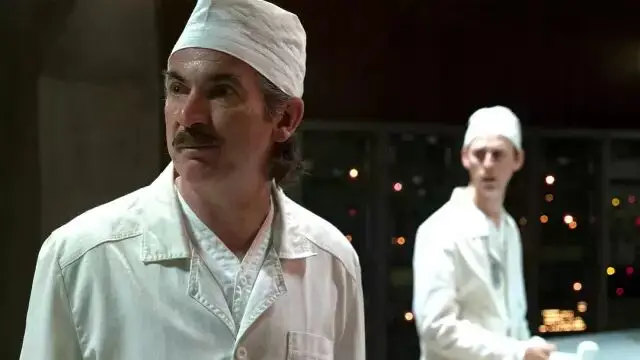
可副工程师并不相信，却说「他被吓傻了，让他先出去……你看错了，它没有爆炸。」
而吓呆在一旁的操作员不停地自言自语“我们的操作没有问题”。
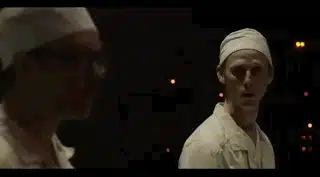
毕竟，核电站爆炸的锅谁都背不起。
接着，一个技术人员用辐射测量仪进行了测量，上面显示是3.6伦琴。
副总工程师故作镇定地说“不太妙 ，但也不太糟”。
讽刺的是，3.6伦琴是简易测量仪的上限。
并不是当时的辐射不严重，而是辐射已经爆表测量不出来了。
可主要管理人员仍旧自欺欺人，并且下达了错误指令，让操作员冒死放开了水闸（后期会引起二次爆炸）。
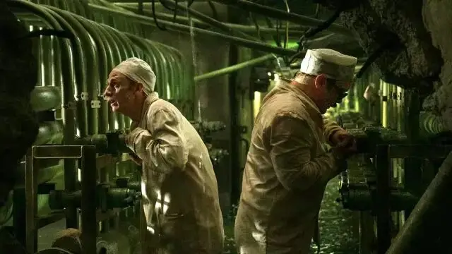
△两人分别在当年5月10号和14号死于莫斯科医院
面对这一前所未有的灾难，没有一个人敢担责。
不敢担责，也就不会去直面真正的真相。
于是，一级汇报一级，互相推脱，彼此隐瞒。
等传到莫斯科总部那里的时候，一场大灾难就变成了一个小事故。
相当于400颗日本广岛原子弹的辐射竟最后消减成为一件微不足道的小事故。
相当于只是做了个胸透而已，没什么大惊小怪的。
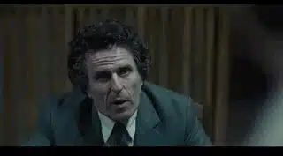
可自欺欺人骗的只是自己，真相依旧在那里，辐射依旧以极快的速度波及着周围的人。
很多核电站工作人员皮肤发红，开始呕吐。
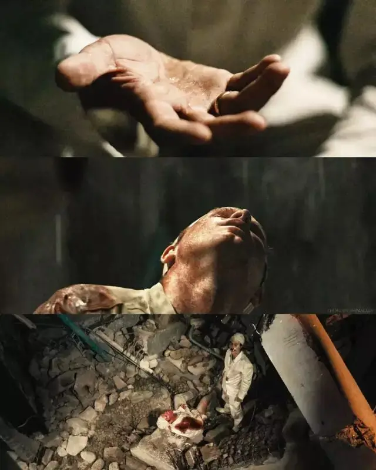
一个消防员碰了石墨，他的手便迅速腐烂。
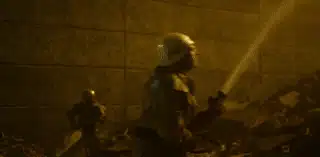
接着，越来越多的伤员被送往医院。
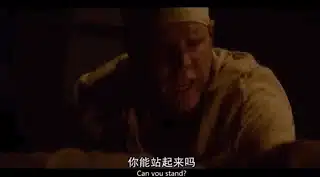
面对这样紧迫的局势，领导们不知所措，到底是如实报告呢，还是继续压着想办法自己搞定。
正当大家犹豫不决的时候，一个老领导给出了方向性的指导：
现在国家告诉我们情况不危险，那就有点信心，同志们。国家需要我们遏制恐慌蔓延，那就照做……
封锁这座城市，谁都不许离开。
切断电话线，防止错误消息误传，防止人民破坏他们自己的劳动成果。
我们今晚在这里做的一切，都会受到嘉奖，这是我们的荣耀时刻。
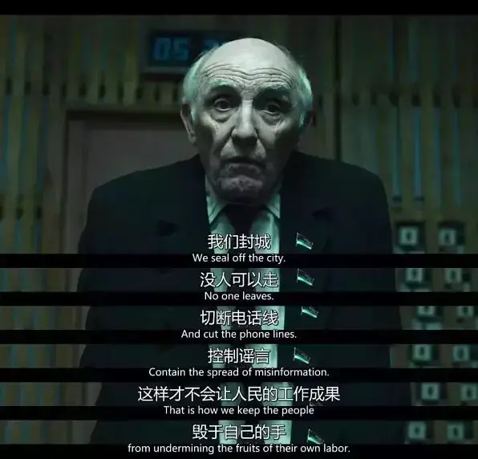
他的发言抑扬顿挫、非常坚定，其他人都忍不住为他鼓掌。
就这样，真相再次被纸包了起来。
而代价就是无知的大多数。
一大群人靠在铁桥上，观看着直通云霄的美丽蓝色光柱。
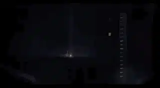
情人们依偎在一起，小孩子在夜色下彼此嬉戏着。
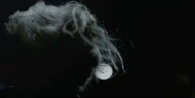
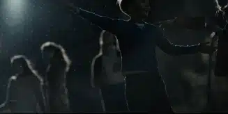
而石墨燃烧后的辐射尘随着风吹落在他们的衣服、皮肤以及鼻孔中。
电影将这个场景拍的非常唯美。
毕竟，还有什么比用美丽去书写残酷来的更让人绝望。
当自欺欺人跳出一个人的范围扩展到一个圈层对另一个圈层的欺骗时，这已经不仅仅是欺诈和谎言，这是对无辜人民的战争!
在当时，最先被死亡吞噬的就是消防员和核电站的工作人员。
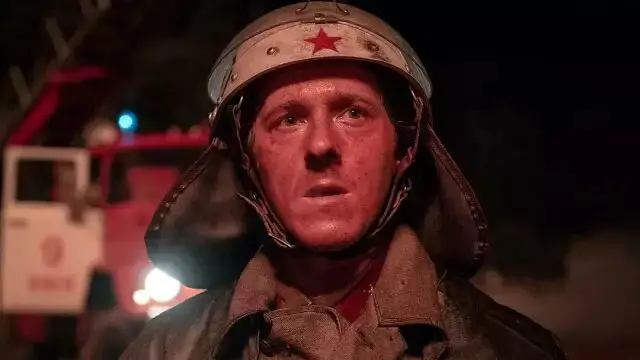
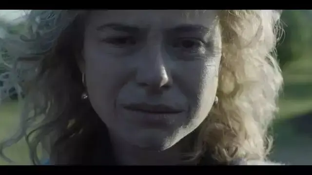
消防员瓦西里的妻子后来在接受访谈时，回忆起丈夫当时遭遇的痛苦：
他的嘴巴、舌头、脸颊、一开始是小伤口，后来越来越大，白色拨片一层层脱落……脸的颜色……他的身体……蓝色，红色，灰褐色……
他的肺和肝的碎片都从嘴里跑出来，他被自己的内脏呛到。我用绷带包着手，伸进他的嘴里，拿出那些东西……
这些都是我的回忆！无法用言语形容！至今无法释怀！唯一拯救我的是一切发生的太快，我没时间思考，也没时间哭泣。
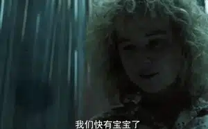
而瓦西里在疼痛中一直看着自己的妻子，他在笔记本上给妻子留言：“我死了之后，把我的遗体火化，我不想让你害怕。”
这样的生离死别很多，另一个女人回忆起当时丈夫去世时的场景：
人死的时候你不能哭，一哭就会打断他，他得继续挣扎。
我从柜子里拿出一根蜡烛，放在他手里，他接过去，还在呼吸，不过他的眼睛渐渐失去光芒。
除了死亡，更多人的在接下来的人生中活在恐惧和孤独的煎熬中。
他们不再是俄罗斯人、白俄罗斯人或者乌克兰人，他们是切尔诺贝利人，就像一个新的种族，一个没有明天、垂死挣扎的种族。
有人跳舞时遇到喜欢的女孩，便发起追求“我们交往吧”。
女孩说“有什么用？你是切尔诺贝利人了，我不敢和你生小孩。”
的确，切尔诺贝利生出来的小孩会永远活在死亡的阴霾下。
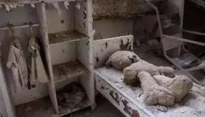
一个女孩只有六岁，他的父亲陪她入睡时，她在父亲耳边轻声说“爸爸，我要活下去，我还很小“。
泪水不禁从父亲的眼眶飙出，“我还以为她什么都不懂”。
的确，这里的孩子早已不是寻常的孩子，当别的孩子在嬉戏、打闹的时候，他们却在思考着死亡。
一个受访者说：
以前的孩子总是会问：我们是怎么出生的？婴儿是怎么来的？
现在他们却在担心核战后会发生什么事。
孩子们不再喜欢那些古典文学，我背诵普希金的诗给他们听，却只看到他们冷漠、空洞的眼神。
他们的世界已经截然不同。
他们喜欢阅读科幻小说，读着人们脱离地球，以太空时间计时，到达另一个世界。
他们对此很感兴趣。他们跟大人不同，不会害怕死亡，他们对死亡充满着幻想。
可真实的死亡和他们的想象还是不同的。
一个儿童医生在接受采访时说：
孩子们有不同的观点。
举例来说，他们不认为癌症等于死亡——他们还不知道这两者之间的关联。
他们对身上发生的事了如指掌——例如诊断结果，服用的药品，手术的名称。他们懂的比他们的母亲还多。
他们过世的时候，脸上有着惊讶的表情。
他们就这样带着差异的表情离开人世。
这些犹如世界末日般的童话故事，里面充满了天真的创伤和美好的残酷。
而这些悲鸣正是谎言的代价！
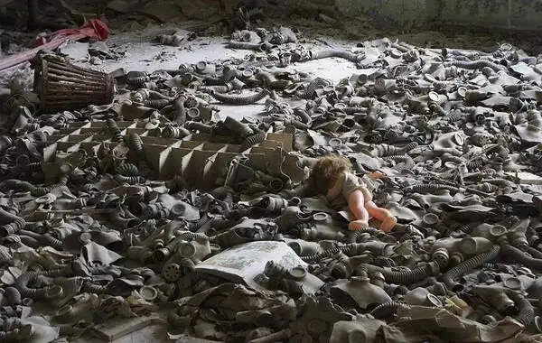
-04- 谎言
也许你已经开始咒骂那些令这场事故发生的人。
也许你已经对他们的谎言咬牙切齿。
是怎样的邪恶，竟然要让那么多人成为他们谎言的代价。
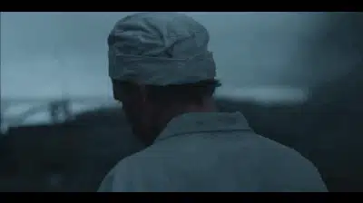
换做以前我也会咒骂。
但现在我不敢那么快地对他们破口大骂。
因为我知道，即使时空倒流，那场事故依旧会发生。
即使是我自己站在那个位置上，做的可能比他们更过分。
为什么？
你可以想一想，让一个人一辈子不撒谎可不可能！
我想答案一定是不可能。
没有一个人敢拍着胸膛说我没有撒过慌。
之所以曾经撒过无数次慌的你敢理直气壮地咒骂另一个撒谎的人，是因为你的谎言还没有造成事故，你的谎言没有让别人倾家荡产，你的谎言没有致人于死地。
此前，我撒了一个慌，让自己和别人都付出了代价。
我能感受到自己心里发生的变化，那就是觉得自己从此不再是个干净的人，我再没有资格和底气去责骂别人。
因为，我和他们一样不干净，我和他们一样诡诈。
罪与罚的律在那一刻开始在我的心中启动。
对我而已，这就是谎言的代价，它损坏的不仅是我的物质，还有我的心灵，它如杀戮一样会让人异化。
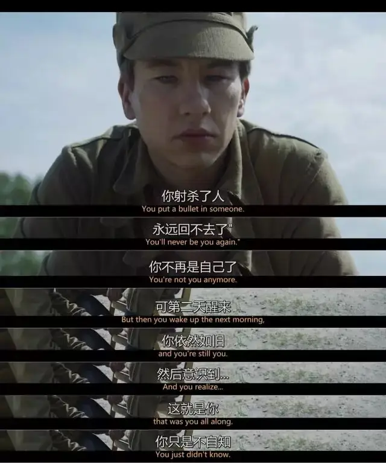
因此，谎言不论大小，必定会带来破口。
这些破口行走在时空之中，时机成熟时便在霎那间吞噬其他无辜的人。
切尔诺贝利便是这样的一场悲剧。
也许有科学家在设计时就发现了一些缺陷，但这并没有引起他足够的警觉，他并没有做出改进，也没有对其他人做出提醒。
也许，一些监管部门在那段时间本应该提高对操作人员的任职资格要求，但出于懒惰，并没有去狠抓这项工作。
也许，一个学化学的大学生当时已经注意到了那柱蓝色火焰有些异常，可多一事不如少一事，他并没有去质疑，也没有去提醒身边人事情的严重性。
他们都撒了慌，他们的谎言可能一辈子都不会被人审判。
但他们真的与切尔诺贝利的悲剧没有关系么。
他们会为这场灾难有真正的内疚么？我们有能力在第一时间堵住这些破口么。
我想这是不可能的。
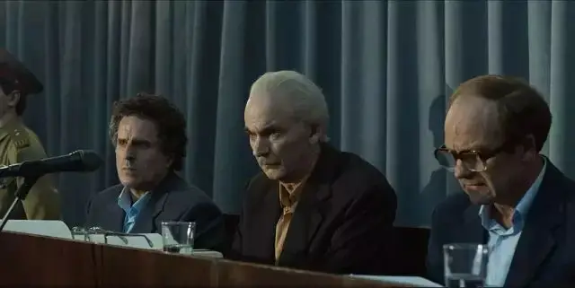
我们再把目光放到灾难发生的最后一环。
那些最终暴露在观众面前的撒谎者，他们为什么不愿意第一时间说出真相。
设想一下，如果你的女儿被女婿打了，别人问起来，你肯定不会多讲。
因为这是家丑，这是打脸丢人的事情。
除非事情完全失控，除非小俩口过不下去要离婚了。
否则你不会随便向别人诉说，尤其是不会让自己的死敌知道。
所以，站在个人层面，直接负责人根本不敢将这件事暴露，因为他会为此而坐牢或者被判死刑。
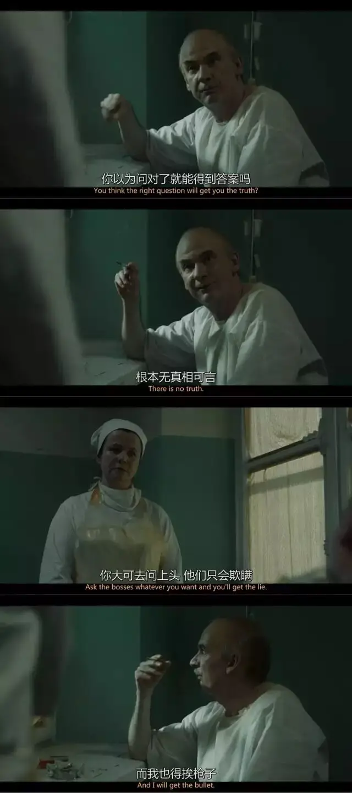
而国家层面的苏联更不可能让西方世界知道自己干了这么大一件搓事。
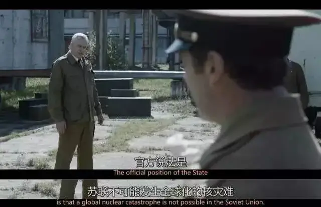
而有着民主体制的韩国照样也不会承认，世越号沉没时，官媒作假、掩盖事实，不仅导致错失救助良机，造成大量死亡，更是让很多家人有冤无处伸。
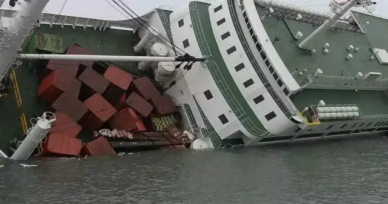
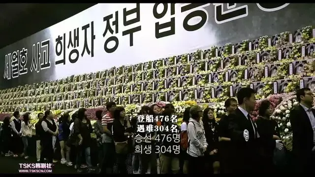
因此，不论任何政治体制，一场灾难都是人性的弱点刮起的大风。
这个弱点无法克服，灾难就无法避免，只是灾难严重程度不同而已。
所以，我说即使时空倒流，悲剧依旧无法改变。
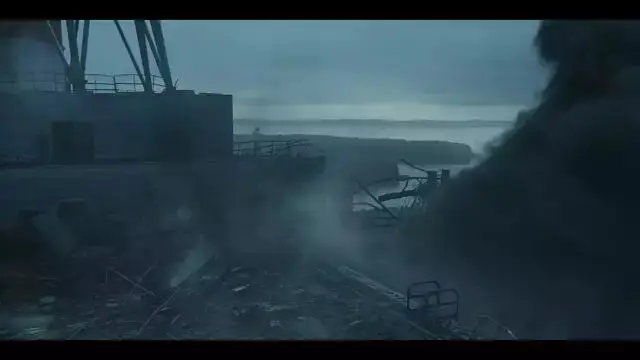
西方世界因为基督教原罪论的影响，对人性的弱点有着清醒的认识。
美国建国之初的清教徒们便在顶层设计中时刻提防着这头随时可能失控的野兽：
媒体必须独立，为的是有人敢第一时间戳穿谎言。
政权必须互相牵制，为的是防止撒谎的人只手遮天。
社会必须要实施法治，为的是不给谎言留后门，同时以量刑和惩罚来威慑人们不要去撒谎。
理清了这些道理，我们再来想一下为什么如此大的灾难会发生在苏联。
电影中主人公的一句台词说明了这个问题：
在一个公正的世界里，我会因为撒谎被枪决。
但不会是因为这个......不会是因为说出真相！
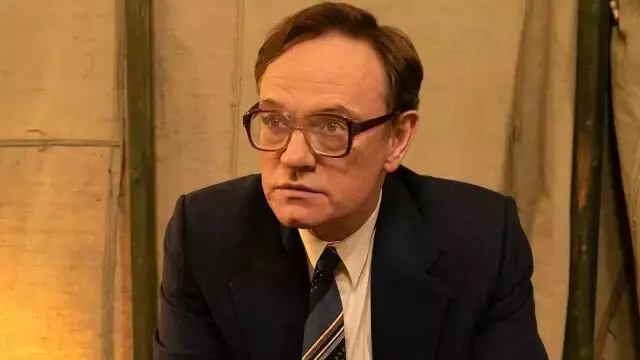
那个地方，所有的一切已经由秘密和谎言来定义，光亮被遮掩的密不透风，处于黑暗中的人们只能被一个个谎言的破口吞噬。
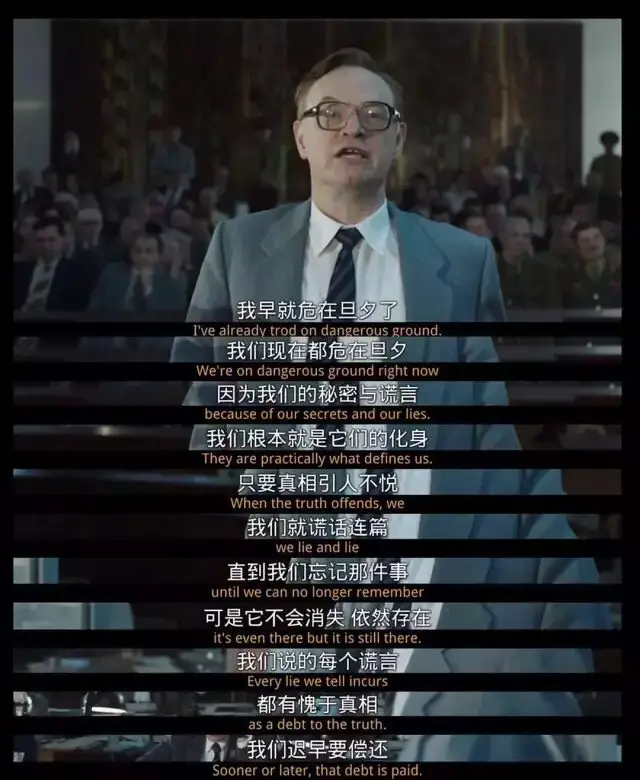
-05- 真相
这部作品开始于一段独白，主人公在叩问：谎言的代价是什么。
作品最后也结束于一段独白：真相一直存在，不论我们发现与否，它一直在那里静静地等待。
两个主人公深度参与了切尔诺贝利事故的处理，他们见证了无数黑暗，也曾伏倒在谎言的权势之下，甚至成为了谎言的一部分。
当他们意识到谎言的代价如此可怕后，他们也明白了真相有多重要。
所以，他们最终像飞蛾扑火般说出了真相，承认自己曾经向全世界撒了谎。
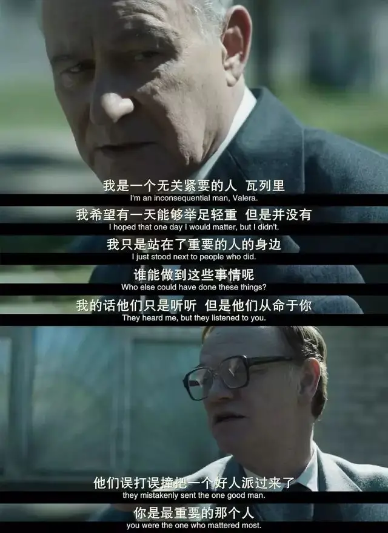
这就是真相的力量。
请注意当主人公在不公不义面前说出这个词语时，背后除了对事实原委的追求，更有着极为澎湃的情感力量。
那是一种极强的信念，甚至可以说是一种信仰。
他们坚信不论这个时代多么弯曲悖谬，“真相”就在那里。
这里的真相已经成为了一种庄严的位格性的存在。
他是一切事实本源、公平良善的化身。
似乎在高天之上俯瞰着卑微龌龊的人类。
所有的谎言都在他的眼皮之下。
切尔诺贝利所有的悲鸣他都能听到。
不论我们的借口多么优雅，他都有一杆公平的秤来评判我们。
这里面包含着敬畏，包含着一种我们很难察觉到的有神论信仰的碎片。
“人在做，天在看”。
即使你撒的谎很小，但举头三尺有神明，你一样会惧怕。
即使你含冤不白，但“老天”知道发生在你身上的不公，你一样会有平安。
因此，某种程度上，切尔诺贝利的悲剧源于无神论，源于人类丧失了敬畏。
这也是现代人面临的真正危机。
我们自给自足，我们掌控一切，我们已经很难从自己的生活中找到要去信仰的理由。
我们并未意识到，谎言的实质是一种堕落。
今天，一个孩子骗自己的母亲，说要拿五元去买笔记本，但实际上只花了三元去买笔记本，另外两元私自去买了自己喜欢的零食。
他日，当他身居要职便会欺上瞒下，将5000伦琴的辐射说成只有5伦琴。
今天，一个孩子向另一个孩子骗取了一个玩具。
他日，当他长大成人，他便敢为了自己的利益去牺牲所有与自己不相关人的一切权力，包括生命。
这就是堕落，不论多么小的谎言，都在将我们向魔鬼更推进了一步。
可惜，精于权衡利弊、满眼物质的现代人在撒谎这件事上察觉不到背后的黑暗力量。
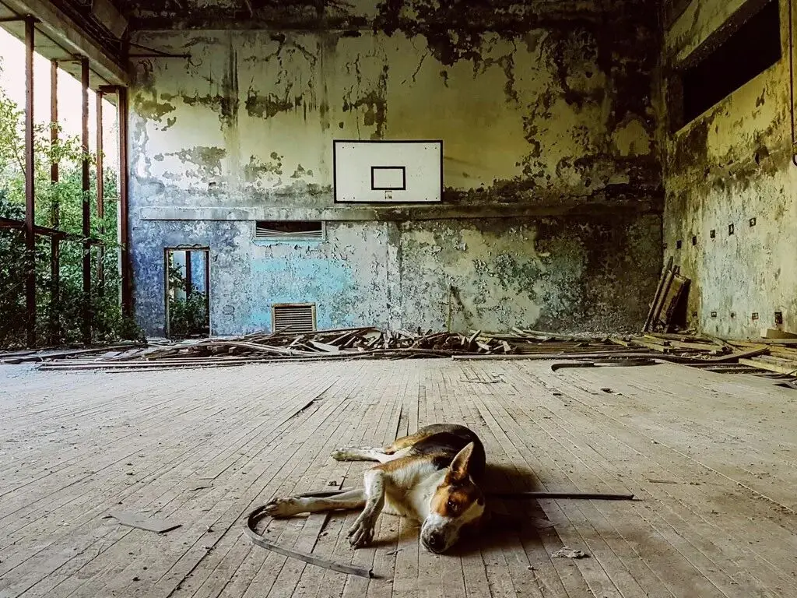
电影在追问谎言的代价是什么，看得见的是几十万人经历的苦难，看不见的是无数人的灵魂堕落到了可怕的地狱中。
既然明白了谎言的代价那么大，我们需要接着问下去。
我们怎么能不撒谎？
我在前面就说过，我们一定会撒谎。
因此，这是个无解的难题。
这也正是我要强调的重点，切尔诺贝利给我们最大的提醒就是，我们必须要绝望。
一个受访者曾说：
但是去切尔诺贝利很多次之后，我发现自己有多无能为力。
所有事物开始瓦解，我的过去再也不能保护我，我找不到答案。
以前有，现在没有了。
是未来在摧毁我，不是过去。
的确，我们必须要及早承认自己的软弱，必须及早抛弃那可怕的自以为是。
正是很多人觉得自己可以搞定、可以控制事态的发展，并选择掩盖事实，反而错失了让更多人免于痛苦的最佳机会。
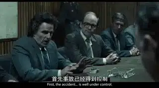
我们太缺乏敬畏，我们太缺乏自知之明，我们太低估了谎言的代价，我们太高估了自己的能力。
我们需要卑微，我们需要将主权重新交还给“真相”。
这也是为什么，如果去表现人类灾难，没有任何音乐能比圣咏更适合。
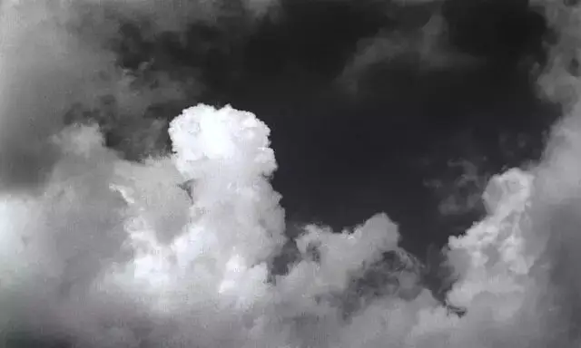
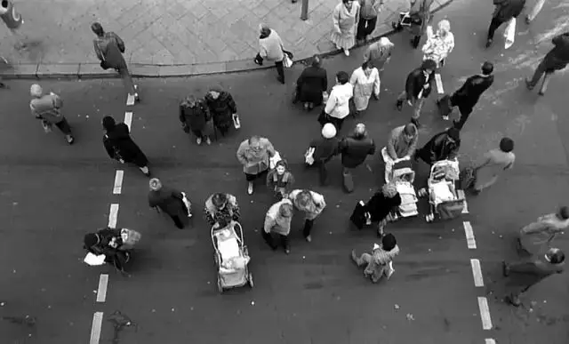
在那响彻云霄、悲天悯人的声音中，人类满身泥巴，像个不知所措的犯错小孩一样，低着头蹲坐在地面上。
就像伊甸园那次，上帝再次从高天向堕落的“亚当”发问：
你在哪里。
你是否还要继续悖逆。
这一次
我们需要在默想中聆听
▼
-END-
推荐阅读
▼
（点击图片即可获取全文）
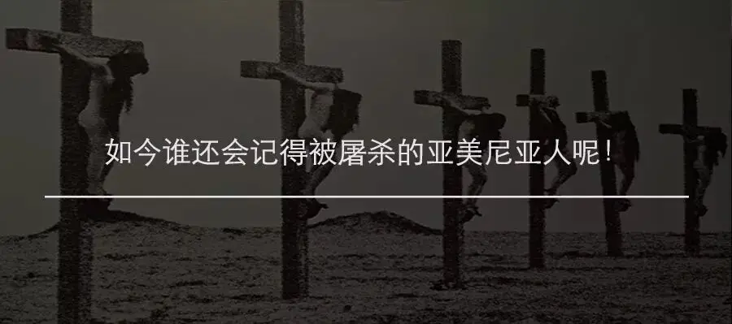


这里没有挑逗你眼目情欲的小鲜肉
也没有挑动你肉体情欲的段子
更没有膨胀你今生骄傲的鸡血
我们只在乎那些最质朴真诚的作品
在那里我们才能恢复真正的想象力
我们也坚信这才是我们真正需要的

ID:Six_hundred_hits
长按二维码，一键关注
【六百击】
电影评论
尽情分享朋友圈

微信二维码打赏通